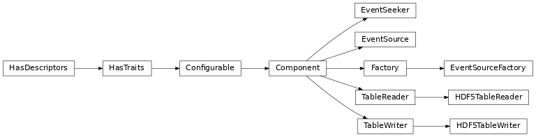

Input/Output (io)¶
Introduction¶
ctapipe.io contains functions and classes related to reading, writing, and
in-memory storage of event data
Reading Event Data¶
This module provides a set of event sources that are python
generators that loop through an input file or stream and fill in
ctapipe.core.Container classes, defined below. They are designed such that
ctapipe can be independent of the file format used for event data, and new
formats may be supported by simply adding a plug-in.
The underlying mechanism is a set of EventSource sub-classes that
read data in various formats, with a common interface and automatic command-line
configuration parameters. These are generally constructed in a generic way by
using EventSourceFactory.produce or by using the helper function
event_source(file_or_url), both of which will construct the
appropriate EventSource subclass based on the input file’s type.
The former is recommended when configuration information should be
passed to a ctapipe.core.Tool, while the latter helper function qis useful
for small scripts or interactive use.
The resulting EventSource then works like a python collection and can be
looped over, providing data for each subsequent event. If looped over
multiple times, each will start at the beginning of the file (except in
the case of streams that cannot be restarted):
with EventSourceFactory.produce(input_url="file.simtel.gz") as source:
for event in source:
do_something_with_event(event)
If you need random access to events rather than looping over all events in
order, you can use the EventSeeker class to allow random access by event
index or event_id. This may not be efficient for some EventSources if
the underlying file type does not support random access.
Creating a New EventSource¶
Creating a new EventSource can be very simple, depending on how easily a
file format can be read into Python.
Firstly, one must create a new module to host their new EventSource, just
like “ctapipe.io.hessioeventsource”. Inside this module create the new
EventSource with a relevant name and inherit from
ctapipe.io.eventsource.EventSource.
There are two methods that must be defined in the new EventSource:
EventSource.is_compatible:- This function performs a simple check to see if the
input_urlis compatible with the EventSource. It is called byEventSourceFactory.produceto find a compatibleEventSourceto read the file. EventSource._generator:- This function handles the looping through the file and filling the
ctapipe.core.Containerfor the event.
In order to avoid introducing additional dependencies, it is a requirement
that any external modules used in the reading of the file format are imported
in the EventSource.__init__. For an example see how pyhessio is
imported within HESSIOEventSource.
If a file format supports random event access, then an efficient method to seek
to an event can be created in EventSource._get_event_by_index and
EventSource._get_event_by_id, which EventSeeker will then utilise.
When creating tests for the new EventSource, it is important to still avoid
introducing dependencies. Therefore it is recommended to add a skip for the
tests if the external dependencies are not installed. This can be achieved
by either:
>>> import pytest
>>> pytest.importorskip("external_module")
To skip all the tests in the file, or:
>>> import pytest
>>> def test_something():
>>> pytest.importorskip("external_module")
To skip a single test function.
The method to install the external software should be included in the
docstring of the EventSource, and also be added to the .travis.yml
file, so that the Travis CI can perform ALL tests. Additionally, a small test
file that is in the corresponding file format should be committed to
ctapipe-extra.
And finally, in order for EventSourceFactory to know about your
EventSource class, it must be included in the global namespace before the
EventSourceFactory is instanced. Therefore one should include it as an
import in the “ctapipe.io.eventsourcefactory” module.
Container Classes¶
Event data that is intended to be read or written from files is stored
in subclasses of ctapipe.core.Container, the structre of which is
defined in the containers module (See reference API below). Each
element in the container is a ctapipe.core.Field, containing the
default value, a description, and default unit if necessary. The
following rules should be followed when creating a Container for new
data:
- Containers both provide a way to exchange data (in-memory) between parts of a code, as well as define the schema for any file output files to be written.
- All items in a Container should be expected to be updated at the same frequency. Think of a Container as the column definitions of a table, therefore representing a single row in a table. For example, if the container has event-by-event info, it should not have an item in it that does not change between events (that should be in another container), otherwise it will be written out for each event and will waste space.
- a Container should be filled in all at once, not at different times during the data processing (to allow for parallelization and to avoid difficulty in reading code).
- Containers may contain a dictionary of metadata (in their
metadictionary), that will become headers in any output file (this data must not change per-event, etc) - Algorithms should not update values in a container that have already been filled in by another algorithm. Instead, prefer a new data item, or a second copy of the Container with the updated values.
- Fields in a container should be one of the following:
- scalar values (
int,float,bool)numpy.NDarrayif the data are not scalar (use only simple dtypes that can be written to output files)- a
ctapipe.core.Containerclass (in the case a hierarchy is needed)- a
ctapipe.core.Mapofctapipe.core.Containeror scalar values, if the hierarchy needs multiple copies of the sameContainer, organized by some variable-length index (e.g. bytel_idor algorithm name)
- Fields that should not be in a container class:
dicts- classes that are not a subclass of
ctapipe.core.Container- any other type that cannot be translated automatically into the column of an output table.
Serialization of Containers:¶
The serializer module provide support for storing
ctapipe.io.Container classes in output files (for example FITS
tables or pickle files)
The hdftableio submodule provides an API to write/read Containers to and
from HDF5 tables using the pytables package.
Reference/API¶
ctapipe.io Package¶
Functions¶
event_source(input_url[, config, parent]) |
Helper function to quickly construct an EventSourceFactory and produce an EventSource. |
Classes¶
TableWriter([parent]) |
|
TableReader() |
Base class for row-wise table readers. |
HDF5TableWriter(filename, group_name, **kwargs) |
A very basic table writer that can take a container (or more than one) and write it to an HDF5 file. |
HDF5TableReader(filename) |
Reader that reads a single row of an HDF5 table at once into a Container. |
EventSeeker(reader[, config, tool]) |
Provides the functionality to seek through a ctapipe.io.eventfilereader.EventSource to find a particular event. |
EventSourceFactory([config, tool]) |
The EventSource ctapipe.core.factory.Factory. |
EventSource([config, tool]) |
Parent class for EventFileReaders of different sources. |
Class Inheritance Diagram¶
ctapipe.io.containers Module¶
Container structures for data that should be read or written to disk
Classes¶
InstrumentContainer(**fields) |
Storage of header info that does not change with event. |
R0Container(**fields) |
Storage of a Merged Raw Data Event |
R0CameraContainer(**fields) |
Storage of raw data from a single telescope |
R1Container(**fields) |
Storage of a r1 calibrated Data Event |
R1CameraContainer(**fields) |
Storage of r1 calibrated data from a single telescope |
DL0Container(**fields) |
Storage of a data volume reduced Event |
DL0CameraContainer(**fields) |
Storage of data volume reduced dl0 data from a single telescope |
DL1Container(**fields) |
DL1 Calibrated Camera Images and associated data |
DL1CameraContainer(**fields) |
Storage of output of camera calibration e.g the final calibrated image in intensity units and other per-event calculated calibration information. |
MCEventContainer(**fields) |
Monte-Carlo |
MCHeaderContainer(**fields) |
Monte-Carlo information that doesn’t change per event |
MCCameraEventContainer(**fields) |
Storage of mc data for a single telescope that change per event |
CameraCalibrationContainer(**fields) |
Storage of externally calculated calibration parameters (not per-event) |
CentralTriggerContainer(**fields) |
|
ReconstructedContainer(**fields) |
collect reconstructed shower info from multiple algorithms |
ReconstructedShowerContainer(**fields) |
Standard output of algorithms reconstructing shower geometry |
ReconstructedEnergyContainer(**fields) |
Standard output of algorithms estimating energy |
ParticleClassificationContainer(**fields) |
Standard output of gamma/hadron classification algorithms |
DataContainer(**fields) |
Top-level container for all event information |
HillasParametersContainer(**fields) |
ctapipe.io.serializer Module¶
Serialize ctapipe containers to file
Classes¶
Serializer(filename[, format, mode]) |
Serializes ctapipe.core.Component, write it to a file thanks to its Writer object For some formats (i.e. |